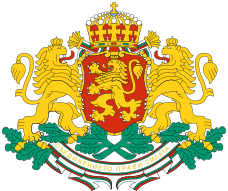
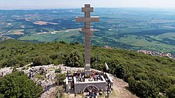
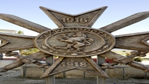
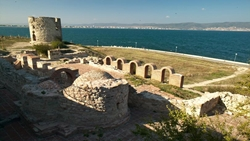
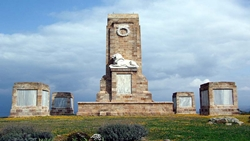
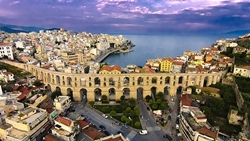
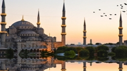

<DOCTYPE! html>
<html lang="en">
    <head>
        <meta charset="utf-8">
        <title>БГ История</title>
        <link rel="stylesheet" href="styles.css" />
    </head>
    <body>
       <header>
            
       <div class="left-head">
        <a href="https://bg.wikipedia.org/wiki/%D0%91%D1%8A%D0%BB%D0%B3%D0%B0%D1%80%D0%B8%D1%8F" target="_blank" title="Герб на Република България"></a>
      </div>
    
      <div class="right-head">
       <h1><span class="special">1300</span> години <span class="bga">България</span></h1>
      </div>
    
      <div class="centered">
       <h2>Важни събития и места от нашата история</h2>
      </div>
      </header>

      <section class="section-left">
        <ul class="first-list">
          <li class="item1"><a href="https://opoznai.bg/view/okolchitza-natzionalen-park-na-hristo-botev" target="_blank">Околчица</a></li>
          <li class="item2"><a href="https://www.youtube.com/watch?v=TfmnqX2fagQ" target="_blank">Плевен</a></li>
          <li class="item3"><a href="https://www.youtube.com/watch?v=jAxwTBMppVs" target="_blank">Тутракан</a></li>
          <li class="item4"><a href="https://www.youtube.com/watch?v=PfDMLFyH-ao" target="_blank">Сливница</a></li>
          <li class="item5"><a href="https://www.youtube.com/watch?v=fBuh9LN8yfA" target="_blank">Шипка</a></li>
          <li class="item6"><a href="https://bg.wikipedia.org/wiki/%D0%9C%D0%B5%D1%81%D0%B5%D0%BC%D0%B2%D1%80%D0%B8%D1%8F_(%D0%91%D1%8F%D0%BB%D0%BE_%D0%BC%D0%BE%D1%80%D0%B5)" target="_blank">Месемврия</a></li>
          <li class="item7"><a href="https://www.youtube.com/watch?v=UKuO5cgHd2k" target="_blank">Дойран</a></li>
          <li class="item9"><a href="https://www.youtube.com/watch?v=-civa6jqOK0" target="_blank">Одрин</a></li>
        </ul>
      </section>

      <section class="section-right">
        <table id="historical-table">
          <caption>
            <p>Кратка историческа таблица със снимки</p>
          </caption>
          <tr>
            <td></td>
            <td></td>
            <td></td>
          </tr>
        
          <tr>
            <td></td>
            <td></td>
            <td></td>
          </tr>
        
          <tr>
            <td></td>
            <td></td>
            <td></td>
          </tr>
        </table>
      </section>

      <footer>
        <details>
          <summary>Всички права запазени 2019.&copy; </summary>
          <p> - Момчил Георгиев - автор на страницата.</p>
          <p> По-голямата част от съдържанието на тази страница  е под защитата на закона.</p>
        </details>

        <svg width="700" height="120">
          <g transform="translate(100,100)">
            <text id="TextElement" x="0" y="0"> Едно историческо SVG:)
            <animateMotion path="M 0 0 L 600 0" dur="8s" fill="freeze" />
           </text>
         </g>
            Sorry, your browser does not support inline SVG.
        </svg>

        <ul class="bottom-list">
          <li><a href="#">контакти</a></li>
          <li><a href="#">адрес</a></li>
          <li><a href="#">новини</a></li>
          <li><a href="#">още факти</a></li>
        </ul>
      </footer>
        
    </body>
</html>    